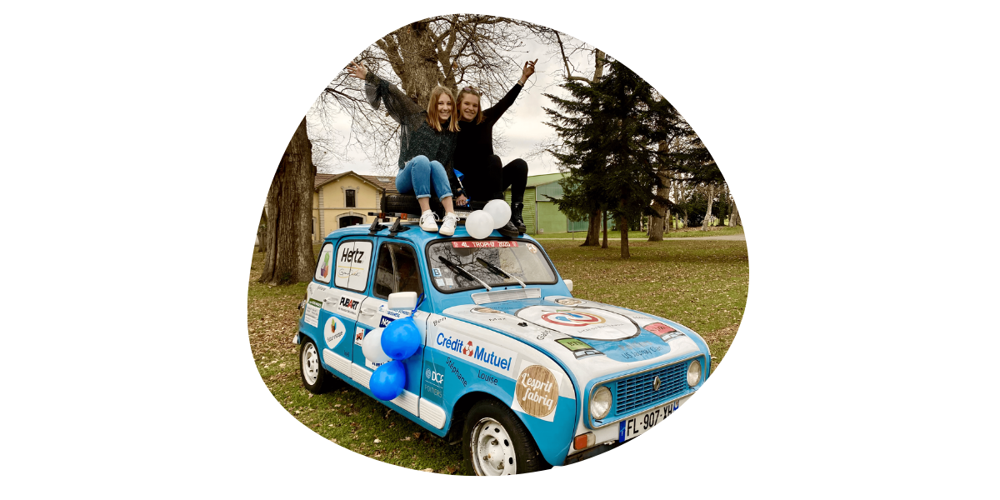
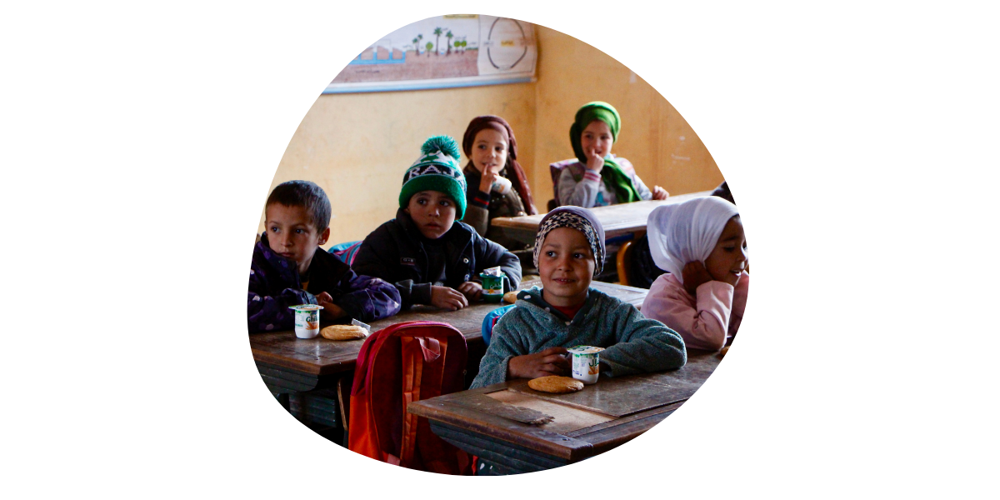
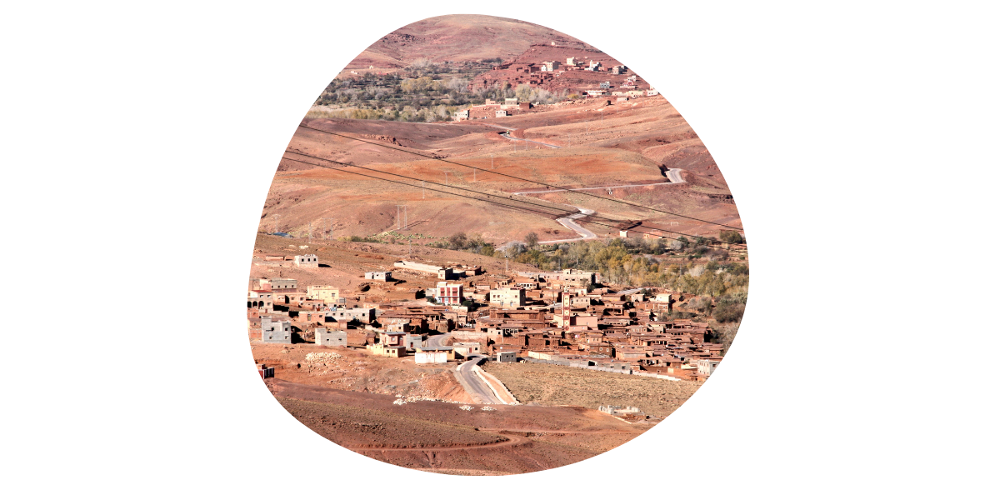

De Biarritz à Marrakech, le 4L trophy est le plus gros rallye du monde pour les moins de 28 ans 👬 . C'est un raid solidaire sur les pistes du Maroc. Pendant 10 jours, les équipages parcourt plus de 6000km. 🌍 Ce n'est pas une course de vitesse mais bien une course d'orientation. Au programme; des épreuves d’orientation jusqu’au pied des dunes du Sahara et une étape marathon de 48h en autonomie avant le retour à Marrakech 🌅. L'entraide est le maître mot de se raid.

Ce raid est avant tout un défi humain. En participant aux 4L Trophy, nous apportons notre grain de sable aux projets éducatifs des enfants du Sud Marocain. 👫 Les Enfants du Desert est l'association que nous soutenons. Du matériels sportifs et scolaires et des dons seront apportés à Merzouga dans le sud-est du Maroc. Depuis 2012, 25 salles de cours ont été financé grâces aux Trophystes. 📚 Nous soutenons aussi La Croix Rouge en apportant 10 kg de denrées alimentaires non périssables à Biarritz le jour du départ. 12 tonnes de dons par an sont récoltés au village-départ et permettent de servir 24 000 repas par an à des personnes défavorisées.🍚

Impossible de faire un raid sans être soucieux de l'environnement. 🌱 Le 4L Trophy s’engage dans une démarche éco-citoyenne avec la mise en place de Brigade Verte et en partenariat avec plusieurs organismes comme Eco Mégot, Surfrider Foundation Maroc, KOUN, Fondation GoodPlanet. 🌍
Promis, on a eu notre permis 🏎
Vous souhaitez contribuer au financement de notre aventure ? Vous pouvez faie un don sur notre cagnotte en ligne ! 💛 On a besoin de vous 💛
Faire un don 😎Entreprises, vous pouvez devenir sponsor de notre superbe 4L 🙃
150 à 599€
150 à 599€
600 à 1500€
600 à 1500€
Soutenez nous financièrement et mettez en avant votre entreprise grâce à notre 4L. Entre Biarritz et Marrakech, et à la vue de tous les participants, notre bolide va être visible par de nombreux Européens et Marocains.
Oui, vous pouvez également nous soutenir en fournissant du matériel pour la préparation du périple. Equipement, fournitures, nourritures, sécurité, assurance, équipement de camping, essence etc.
Nous soutenir par le biais de dons est un moyen simple de nous aider à construire ce projet. Nous avons une cagnotte en ligne. Il suffit de cliquer sur "Don".
En plus d'une visibilité non négligeable, vous recevrez un reçu fiscal déductible sur vos impôts à hauteur de 66% sur la somme versée.